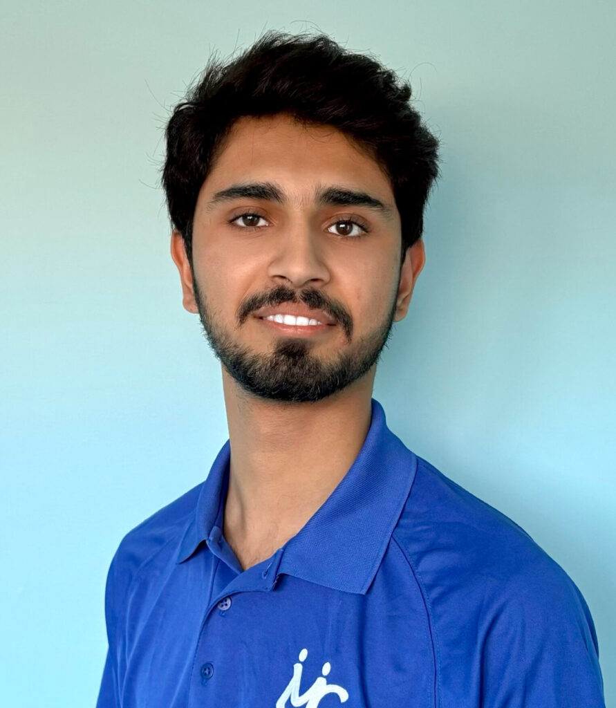

Our Team

Abubaker Ahmadi
President
Leads CSAI initiatives, organizes hack nights, and mentors students on AI projects.
This is to test the read more section abbaddfdfldslfl dfdsfsdf;lsd;lf dfsdfsdfsdff
This is to test the read more section abbaddfdfldslfl dfdsfsdf;lsd;lf dfsdfsdfsdff

Sarah Lee
VP Projects
Oversees hands-on projects, from vision pipelines to agentic workflows.
This is a test only
This is a test only

Anthony Joseph Carpinello
Vice President
Coordinates workshops, mixers, and hack sessions for the club community.

New Officer
Blog & Media
Publishes blog posts, captures project highlights, and manages CSAI communications.